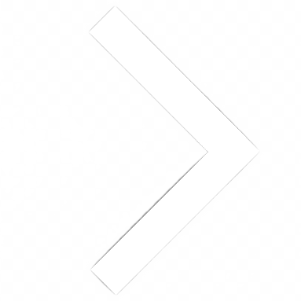

Сатурн

Шестая планета от Солнца. Как и спутники Юпитера, Сатурн был обнаружен Галилеем в начале XVII века. На сегодняшний день эта планета остаётся одной из наименее изученных.
Атмосфера Сатурна состоит из водорода (96%) и гелия (4%) с незначительными вкраплениями других газов. Скорость ветра на Сатурне достигает 1 800 км/ч — это самые сильные ветра в системе. Облака в его атмосфере тоже образуют полосы и пятна гигантских вихрей, хоть и менее заметные, чем на Юпитере.
О происходящем за атмосферным слоем планеты известно мало. Предположительно, в центре находится металлосиликатное ядро, окружённое спрессованными до состояния металла газами, плотность которых уменьшается по мере удаления от ядра.
Планета находится в 9,5 раз дальше от Солнца, чем Земля, и делает оборот вокруг звезды за 29,5 земных лет. Наклон оси Сатурна напоминает земной. По скорости вращения вокруг своей оси Сатурн уступает только Юпитеру. Как и у других газовых гигантов, скорость вращения на разных широтах у планеты разная. Это происходит потому, что поверхность Сатурна текучая, а не твёрдая. Плотность Сатурна так мала, что он мог бы плавать на поверхности воды.
Главная особенность Сатурна — впечатляющая система из семи колец. Они состоят из миллиардов ледяных осколков, которые отлично отражают свет, а потому хорошо заметны. Радиус колец огромен — 73 000 километров, а толщина — всего 1 километр. Считается, что эти кольца — осколки спутника, разрушенного гравитацией планеты.
Недавние исследования показали, что вокруг Сатурна вращаются 82 спутника — на данный момент это рекорд солнечной системы (до 2016 года лидером считался Юпитер). Все спутники покрыты льдом. Крупнейший, Титан, имеет плотную азотистую атмосферу и озёра жидкого метана на поверхности. На другом спутнике, Энцеладе, обнаружена жидкая вода, выталкиваемая на поверхность гейзерами. Это делает его крайне интересным объектом для изучения.
Сатурн назван именем древнеримского бога времени, отца Юпитера.